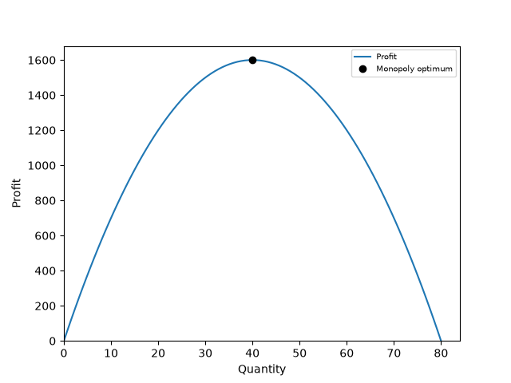
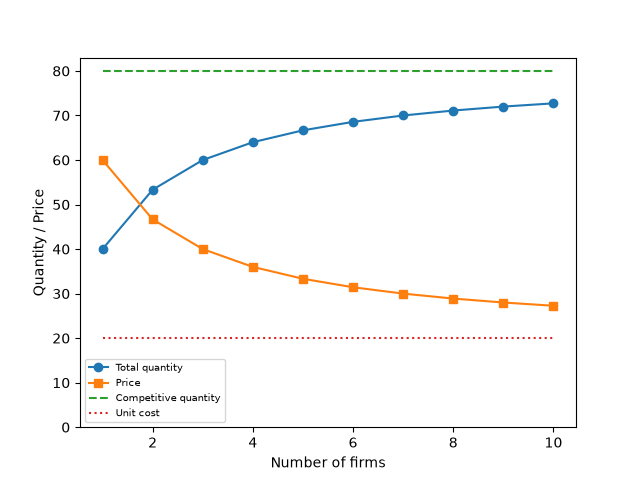
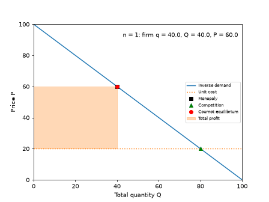

第 2 章: 2 次関数と独占・寡占市場¶
2.1 この章の地図¶
第 1 章では、需要と供給を直線（1 次関数）で表しました。この章の道具は、2 次関数です。グラフは放物線で、山（または谷）の頂上が 1 つあります。
経済学で 2 次関数が出てくる代表が、独占企業の利潤です。数量を増やすと、売上は増えますが、価格は下がります。その結果、利潤は数量の 2 次関数になり、放物線の頂点が、利潤を最大にする数量です。

| 項目 | 内容 |
|---|---|
| 経済学の題材 | 独占の利潤最大化、完全競争との比較と死荷重、クールノー競争（寡占）、n 企業の対称均衡 |
| 数学 | 2 次関数、平方完成、頂点（最大値・最小値）、判別式、解の公式、連立方程式 |
| 使う Python の機能 | 関数、タプル、dataclass、lambda、max の key、テスト（pytest） |
| 新しく導入するライブラリ | なし（標準ライブラリの math と、第 1 章の Matplotlib・NumPy） |
| 完成形 | complete_the_square、parabola_vertex、quadratic_discriminant、quadratic_roots、argmax_on_grid、MarketOutcome、inverse_demand_price、monopoly_profit、monopoly_outcome、competitive_outcome、monopoly_deadweight_loss、cournot_best_response、cournot_duopoly、cournot_outcome |
| ファイル | 実装: lib/chapter02/quadratic.py、lib/chapter02/monopoly.py、lib/chapter02/plot.py（図）／テスト: test/chapter02/test_quadratic.py、test/chapter02/test_monopoly.py、test/chapter02/test_plot.py |
| データ | なし（手計算できる小さな例だけ） |
数学の式とコードの対応¶
| 経済学・数学 | 式 | コード |
|---|---|---|
| 平方完成 | a·x² + b·x + c = a·(x − h)² + k | complete_the_square(a, b, c) |
| 頂点 | h = −b ÷ (2a)、k = c − b² ÷ (4a) | parabola_vertex(a, b, c) |
| 判別式 | D = b² − 4ac | quadratic_discriminant(a, b, c) |
| 解の公式 | x = (−b ± √D) ÷ (2a) | quadratic_roots(a, b, c) |
| 逆需要（数量から価格） | P = a − b·Q | inverse_demand_price(quantity, a, b) |
| 独占の利潤 | π(Q) = (a − b·Q − c)·Q | monopoly_profit(quantity, a, b, cost) |
| 独占の最適 | Q* = (a − c) ÷ (2b)、P* = (a + c) ÷ 2 | monopoly_outcome(a, b, cost) |
| 完全競争 | P = c、Q = (a − c) ÷ b | competitive_outcome(a, b, cost) |
| 死荷重 | ½·(P独占 − c)·(Q競争 − Q独占) | monopoly_deadweight_loss(a, b, cost) |
| クールノーの最適反応 | q = (a − c − b·q相手) ÷ (2b) | cournot_best_response(rival_quantity, a, b, cost) |
| n 社の対称均衡 | 1 社 q = (a − c) ÷ ((n + 1)·b) | cournot_outcome(firms, a, b, cost) |
記号について: 第 1 章の需要は q = a − b·p で、価格から数量を求める式でした。この章では、向きを逆にした 逆需要 P = a − b·Q（数量から価格）を使います。独占企業は「何個作るか」を決め、価格は需要が決めるからです。同じ文字 a・b でも、意味が違います。第 1 章の需要 q = 100 − p は、逆需要 P = 100 − Q と同じ直線ですが、逆需要 P = 100 − 2Q は、第 1 章の形では q = 50 − 0.5p です。また、2 次関数の係数（a・b・c）と、市場の係数（a・b・費用 c）が、同じ文字なので、コードでは費用を
costと書いて区別します。図の軸と凡例は、Matplotlib で日本語のフォントを避けるため、英語にしています。
前提とする章¶
第 1 章 の、直線の式・連立方程式・三角形の面積を使います。高校数学の 2 次関数（平方完成・解の公式）を、一度は学んだ方を想定しています。忘れていても、2.4 節で思い出せます。
独占・寡占の経済学としての意味（独占の弊害、ゲーム理論としてのクールノー競争）は、ミクロ経済学のためのプログラミング（初級）の第 11 章 と 第 12 章 で扱います。この章は、そこで使う数学（放物線の頂点・連立方程式）を、関数とテストで確かめます。
2.2 準備¶
cd apps/math-for-economics-programming/python
uv run pytest test/chapter02
46 passed
自分でコードを書くときは、第 1 章と同じく、practice/chapter02/ に、完成形と同じ名前のファイル（quadratic.py・monopoly.py・plot.py・test_quadratic.py・test_monopoly.py・test_plot.py）を作り、テストの import を from practice.chapter02... に書き換えます（図の節を後回しにするなら、plot.py と test_plot.py は要らず、テストは 40 件になります）。plot.py と、下の check スクリプトの import も、from practice.chapter02... に書き換えます（書き換えないと、完成形を動かすことになります）。テストの import の一覧は、完成形の全関数です。まだ書いていない関数を import すると、ImportError になり、Green になりません。関数を 1 つ書くたびに、その名前を、import に足していってください（最初のテストの 1 つ、quadratic_roots を使うものも、その関数を書くまで、後回しにします）。「予想の答え合わせ」のスクリプトは、practice/chapter02/check.py に保存し、uv run python -m practice.chapter02.check で実行します。
2.3 予想する¶
次の 4 つの問いに、紙で、手計算で答えてください。答えは、この節には書いてありません。「プログラミング」の節の「予想の答え合わせ」で確かめます。
- 2x² − 8x + 6 = 0 の判別式と解は、いくつですか。x² + 2x + 5 = 0 は、どうですか
- 逆需要が P = 100 − Q、1 単位あたりの費用が 20 の独占企業があります。利潤 π(Q) = (100 − Q − 20)·Q を平方完成してください。利潤を最大にする数量・価格・利潤は、いくつですか。完全競争（価格 ＝ 費用）なら、数量と価格は、いくつですか。死荷重は、いくつですか
- 逆需要が P = 100 − 2Q に変わると（費用は 20 のまま）、独占の数量・価格・利潤・死荷重は、どう変わりますか。価格は変わりますか
- 同じ市場（P = 100 − Q、費用 20）に、2 社がいて、互いに相手の数量を所与として、数量を決めます（クールノー競争）。1 社の数量・価格・1 社の利潤は、いくつですか。10 社になると、価格は、いくつになりますか。企業がもっと増えると、価格は、どこに近づきますか
2.4 2 次関数と独占・寡占の考え方¶
2 次関数と平方完成¶
2 次関数は、y = a·x² + b·x + c（a ≠ 0）の形の関数で、グラフは放物線です。a > 0 なら下に凸（谷）、a < 0 なら上に凸（山）です。a = 0 なら 1 次関数（直線）なので、2 次関数として扱いません（エラーにします）。
放物線の頂上（頂点）を見つける方法が、平方完成です。
a·x² + b·x + c = a·(x + b ÷ (2a))² + c − b² ÷ (4a) = a·(x − h)² + k
(x − h)² は、0 以上です。a < 0 なら、a·(x − h)² は 0 以下なので、y は x = h のとき、最大値 k をとります。a > 0 なら、最小値 k です。頂点の座標は、h = −b ÷ (2a)、k = c − b² ÷ (4a) です。
判別式と解の公式¶
2 次方程式 a·x² + b·x + c = 0 の解は、解の公式で求めます。
x = (−b ± √D) ÷ (2a)、D = b² − 4ac（判別式）
√D は、D が負だと実数になりません。そこで、D の符号で、実数解の個数がわかります。D > 0 なら 2 つ、D = 0 なら 1 つ（重解。頂点が x 軸に接する）、D < 0 なら、実数解はありません（放物線が x 軸と交わらない）。
2 つの解の積は c ÷ a です（解と係数の関係）。コンピュータで解の公式をそのまま計算すると、b が大きいとき、−b と √D がほぼ同じ大きさになり、引き算で有効桁が消えます（桁落ち）。そこで、符号の同じものどうしを足して 1 つ目の解を求め、2 つ目は積 c ÷ a から求めます。
独占の利潤は 2 次関数¶
独占企業が Q 作ると、価格は逆需要 P = a − b·Q で決まります。1 単位あたりの費用 c が一定なら、利潤は、
π(Q) = (P − c)·Q = (a − b·Q − c)·Q = −b·Q² + (a − c)·Q
で、Q の 2 次関数です。2 乗の係数 −b が負なので、上に凸の放物線で、頂点で利潤が最大です。頂点の公式で、Q* = (a − c) ÷ (2b)、価格は P* = a − b·Q* = (a + c) ÷ 2 です。価格は b に依存しません（b は数量だけを変えます）。
完全競争との比較と死荷重¶
完全競争では、価格は費用まで下がります（P = c）。そのときの数量は、a − b·Q = c から Q = (a − c) ÷ b で、独占のちょうど 2 倍です。独占では、数量が減り、価格が上がります。その結果、失われる総余剰が死荷重です。独占の数量から完全競争の数量までの、需要曲線と費用の線に挟まれた三角形の面積で、½·(P独占 − c)·(Q競争 − Q独占) です。
クールノー競争と連立方程式¶
2 社がいて、それぞれが相手の数量を所与として、自社の利潤を最大にする数量を選ぶとします（クールノー競争）。相手が q₂ 作るとき、自社の利潤 (a − b·(q₁ + q₂) − c)·q₁ は、q₁ の 2 次関数で、頂点は、
q₁ = (a − c − b·q₂) ÷ (2b)（最適反応）
です。2 社とも最適反応をとっている点（ナッシュ均衡）は、2 社の最適反応の連立方程式の解です。費用が c₁・c₂ のとき、解くと q₁ = (a − 2c₁ + c₂) ÷ (3b)、q₂ = (a − 2c₂ + c₁) ÷ (3b) になります。
n 社が同じ費用なら、対称な均衡で、1 社 q = (a − c) ÷ ((n + 1)·b)、市場全体の数量は n 倍です。価格 − 費用 = (a − c) ÷ (n + 1) なので、n = 1 で独占に一致し、n が大きくなると、価格は費用（完全競争）に近づきます。
2.5 プログラミング¶
Red: 平方完成のテスト¶
test_quadratic.py の先頭の import です。
import pytest
from lib.chapter02.quadratic import (
argmax_on_grid,
complete_the_square,
parabola_vertex,
quadratic_discriminant,
quadratic_roots,
)
2x² − 8x + 6 は、手計算で 2(x − 2)² − 2 と平方完成できます。平方完成した式が、元の式と同じ値になることも、いくつかの x（0 < x < 1 を含む）で確かめます。
def test_平方完成すると頂点の形になる() -> None:
# 2x² − 8x + 6 = 2(x − 2)² − 2
assert complete_the_square(2, -8, 6) == (2, 2, -2)
def test_平方完成した式は元の式と同じ値になる() -> None:
a, h, k = complete_the_square(2, -8, 6)
for x in [-1, 0, 0.5, 3, 10]:
assert a * (x - h) ** 2 + k == pytest.approx(2 * x**2 - 8 * x + 6)
def test_上に凸の放物線の頂点は最大値() -> None:
# −x² + 80x = −(x − 40)² + 1600
assert parabola_vertex(-1, 80, 0) == (40, 1600)
def test_2乗の係数が0なら2次関数ではない() -> None:
with pytest.raises(ValueError):
complete_the_square(0, 2, 1)
with pytest.raises(ValueError):
parabola_vertex(0, 2, 1)
with pytest.raises(ValueError):
quadratic_roots(0, 2, 1)
quadratic.py がないので、収集の時点で失敗します（Red）。
Green: 平方完成と頂点¶
quadratic.py の先頭の import です。
import math
from collections.abc import Callable
def _require_quadratic(a: float) -> None:
if a == 0:
raise ValueError("x² の係数 a が 0 では、2 次関数ではありません")
def complete_the_square(a: float, b: float, c: float) -> tuple[float, float, float]:
"""平方完成: a·x² + b·x + c = a·(x − h)² + k の（a, h, k）を返す。"""
_require_quadratic(a)
h = -b / (2 * a)
k = c - b**2 / (4 * a)
return a, h, k
def parabola_vertex(a: float, b: float, c: float) -> tuple[float, float]:
"""放物線の頂点（h, k）。a < 0 なら最大値、a > 0 なら最小値。"""
_, h, k = complete_the_square(a, b, c)
return h, k
判別式と解の公式¶
判別式の 3 つの場合（正・0・負）を、テストにします。D = 0 では、2 乗の係数が 1 でない例（2x² − 8x + 8）も入れます（2a の掛け算と割り算の取り違えを見つけるためです）。解を代入すると 0 になる、という性質も確かめます（3x² − 5x − 7 = 0 の解は、無理数で、手計算しにくいからです）。
def test_判別式は_b2乗引く_4ac() -> None:
assert quadratic_discriminant(2, -8, 6) == 16
assert quadratic_discriminant(1, -4, 4) == 0
assert quadratic_discriminant(1, 2, 5) == -16
def test_実数解の個数は判別式の符号で決まる() -> None:
assert quadratic_roots(2, -8, 6) == (1, 3) # D > 0: 2 つ
assert quadratic_roots(1, -4, 4) == (2,) # D = 0: 1 つ
assert quadratic_roots(2, -8, 8) == (2,) # D = 0、2 乗の係数が 1 でない
assert quadratic_roots(1, 2, 5) == () # D < 0: なし
def test_bが大きくても小さいほうの解が桁落ちしない() -> None:
# x² + 10⁸x + 1 = 0 の解は、およそ −10⁸ と −10⁻⁸（2 つの解の積は c ÷ a = 1）
lower, upper = quadratic_roots(1, 1e8, 1)
assert lower == pytest.approx(-1e8, rel=1e-12)
assert upper == pytest.approx(-1e-8, rel=1e-12)
assert quadratic_roots(1, -1e8, 1)[0] == pytest.approx(1e-8, rel=1e-12)
def test_解を代入すると0になる() -> None:
for x in quadratic_roots(3, -5, -7):
assert 3 * x**2 - 5 * x - 7 == pytest.approx(0)
def quadratic_discriminant(a: float, b: float, c: float) -> float:
"""判別式 D = b² − 4ac。正なら実数解 2 つ、0 なら 1 つ、負ならなし。"""
return b**2 - 4 * a * c
def quadratic_roots(a: float, b: float, c: float) -> tuple[float, ...]:
"""解の公式で、a·x² + b·x + c = 0 の実数解を、小さい順に返す。
−b と √D を、同じ符号どうしで足して 1 つ目の解を求め、もう 1 つは
解の積 c ÷ a から求める（近い数の引き算で、桁が落ちるのを避ける）。
"""
_require_quadratic(a)
d = quadratic_discriminant(a, b, c)
if d < 0:
return ()
if d == 0:
return (-b / (2 * a),)
q = -(b + math.copysign(math.sqrt(d), b)) / 2
return tuple(sorted([q / a, c / q]))
x² + 10⁸x + 1 = 0 の小さいほうの解（約 −10⁻⁸）は、公式をそのまま計算すると、約 −0.745 × 10⁻⁸ になり、25% もずれます。2 つ目の解を c ÷ q で求めると、正しい値になります。2 つの解の大小は、a と b の符号で入れ替わるので、sorted で、小さい順にそろえます。
格子探索: 頂点を数値で確かめる¶
頂点の式が正しいかを、式を使わずに確かめる方法があります。範囲を細かい格子に区切り、すべての点で関数の値を計算して、最大の点を探す格子探索です。答えは格子の間隔の分だけずれますが、式の誤りを見つけるには十分です。
def test_格子の上で最大値をとる点を探す() -> None:
best = argmax_on_grid(lambda x: -((x - 40) ** 2) + 1600, 0, 100, 201)
assert best == 40
def test_格子探索の答えは頂点の近くにある() -> None:
def f(x: float) -> float:
return -2 * x**2 + 7 * x + 1
h, _ = parabola_vertex(-2, 7, 1)
best = argmax_on_grid(f, 0, 10, 1001)
assert best == pytest.approx(h, abs=0.01)
def test_格子の点が2つ未満ならエラー() -> None:
with pytest.raises(ValueError):
argmax_on_grid(lambda x: x, 0, 1, 1)
def argmax_on_grid(
func: Callable[[float], float], low: float, high: float, points: int
) -> float:
"""low から high までを、等間隔の points 個の点に区切り、func が最大の点を返す。"""
if points < 2:
raise ValueError("格子の点は、2 つ以上必要です")
step = (high - low) / (points - 1)
grid = [low + i * step for i in range(points)]
return max(grid, key=func)
max(grid, key=func) は、func の値が最大になる、grid の要素を返します。
独占の利潤¶
test_monopoly.py の先頭です。A, B, COST は、この章で使い回す例（逆需要 P = 100 − Q、費用 20）です。
import pytest
from lib.chapter02.monopoly import (
MarketOutcome,
competitive_outcome,
cournot_best_response,
cournot_duopoly,
cournot_outcome,
inverse_demand_price,
monopoly_deadweight_loss,
monopoly_outcome,
monopoly_profit,
)
from lib.chapter02.quadratic import argmax_on_grid, parabola_vertex
A, B, COST = 100, 1, 20
def test_利潤は逆需要の価格から費用を引いて数量を掛けたもの() -> None:
assert inverse_demand_price(30, A, B) == 70
assert inverse_demand_price(30, 100, 2) == 40
assert monopoly_profit(10, A, B, COST) == 700
assert monopoly_profit(10, 100, 2, COST) == 600
def test_利潤は数量の2次関数() -> None:
# π(Q) = (a − b·Q − c)·Q = −b·Q² + (a − c)·Q
for q in [0, 0.5, 15, 40, 90]:
expected = -2 * q**2 + 80 * q
assert monopoly_profit(q, 100, 2, COST) == pytest.approx(expected)
def test_独占の利潤最大は放物線の頂点() -> None:
assert monopoly_outcome(A, B, COST) == MarketOutcome(
quantity=40, price=60, profit=1600
)
assert parabola_vertex(-B, A - COST, 0) == (40, 1600)
# 需要の傾きが 1 でないとき（P = 100 − 2Q）
assert monopoly_outcome(100, 2, COST) == MarketOutcome(
quantity=20, price=60, profit=800
)
@pytest.mark.parametrize(
"params", [(100, 1, 20), (100, 2, 20), (50, 0.5, 10), (12, 3, 0)]
)
def test_頂点の式と格子探索の答えが一致する(
params: tuple[float, float, float],
) -> None:
a, b, cost = params
points = 2001
step = (a / b) / (points - 1)
best = argmax_on_grid(lambda q: monopoly_profit(q, a, b, cost), 0, a / b, points)
assert best == pytest.approx(monopoly_outcome(a, b, cost).quantity, abs=step)
b = 1 の例だけでは、b を掛けるか割るかの取り違えを、見逃します。最初から b = 2（P = 100 − 2Q）と b = 0.5 の例を入れています。格子探索のテストは、4 つの市場で、頂点の式と、数値の答えが、格子の間隔以内で一致することを確かめます。
monopoly.py の先頭の import です。
from dataclasses import dataclass
@dataclass(frozen=True)
class MarketOutcome:
"""市場全体の数量・価格・利潤（企業が複数なら、全企業の合計）。"""
quantity: float
price: float
profit: float
def _validate_market(a: float, b: float, cost: float) -> None:
if b <= 0:
raise ValueError("需要の傾き b は、正でなければなりません")
if cost < 0 or a <= cost:
raise ValueError("費用 c は 0 以上で、価格の上限 a より低くなければなりません")
def inverse_demand_price(quantity: float, a: float, b: float) -> float:
"""逆需要: 市場全体の数量 Q のときの価格 P = a − b·Q。"""
return a - b * quantity
def monopoly_profit(quantity: float, a: float, b: float, cost: float) -> float:
"""市場全体で Q 作ったときの利潤 π(Q) = (a − b·Q − c)·Q。Q の 2 次関数。"""
return (inverse_demand_price(quantity, a, b) - cost) * quantity
def monopoly_outcome(a: float, b: float, cost: float) -> MarketOutcome:
"""独占: 利潤の放物線の頂点 Q* = (a − c) ÷ (2b) で、利潤が最大になる。"""
_validate_market(a, b, cost)
quantity = (a - cost) / (2 * b)
return MarketOutcome(
quantity=quantity,
price=inverse_demand_price(quantity, a, b),
profit=monopoly_profit(quantity, a, b, cost),
)
完全競争と死荷重¶
def test_完全競争では価格が費用に等しく数量は独占の2倍() -> None:
assert competitive_outcome(A, B, COST) == MarketOutcome(
quantity=80, price=20, profit=0
)
assert competitive_outcome(100, 2, COST) == MarketOutcome(
quantity=40, price=20, profit=0
)
assert monopoly_outcome(A, B, COST).price > competitive_outcome(A, B, COST).price
def test_死荷重は失われた三角形の面積() -> None:
assert monopoly_deadweight_loss(A, B, COST) == 800
assert monopoly_deadweight_loss(100, 2, COST) == 400
@pytest.mark.parametrize("params", [(100, 1, 20), (100, 2, 20), (30, 0.5, 6)])
def test_死荷重は総余剰の減少分に等しい(params: tuple[float, float, float]) -> None:
a, b, cost = params
monopoly = monopoly_outcome(a, b, cost)
competition = competitive_outcome(a, b, cost)
# 消費者余剰は、需要曲線の下・価格の上の三角形（価格軸の切片は a）
surplus_monopoly = (a - monopoly.price) * monopoly.quantity / 2 + monopoly.profit
surplus_competition = (a - competition.price) * competition.quantity / 2
loss = surplus_competition - surplus_monopoly
assert monopoly_deadweight_loss(a, b, cost) == pytest.approx(loss)
@pytest.mark.parametrize(
"params", [(100, 0, 20), (100, -1, 20), (20, 1, 20), (100, 1, -1)]
)
def test_市場が成り立たない設定はエラー(params: tuple[float, float, float]) -> None:
with pytest.raises(ValueError):
monopoly_outcome(*params)
with pytest.raises(ValueError):
competitive_outcome(*params)
def competitive_outcome(a: float, b: float, cost: float) -> MarketOutcome:
"""完全競争: 価格が費用に等しくなるまで作る。Q = (a − c) ÷ b、利潤は 0。"""
_validate_market(a, b, cost)
return MarketOutcome(quantity=(a - cost) / b, price=cost, profit=0)
def monopoly_deadweight_loss(a: float, b: float, cost: float) -> float:
"""死荷重: 独占で失われる総余剰 = ½·(P独占 − c)·(Q競争 − Q独占)。"""
monopoly = monopoly_outcome(a, b, cost)
competition = competitive_outcome(a, b, cost)
return (monopoly.price - cost) * (competition.quantity - monopoly.quantity) / 2
死荷重のテストは、三角形の式の値だけでなく、総余剰（消費者余剰 ＋ 利潤）の、完全競争と独占の差に等しいことを、3 つの市場で確かめます。費用が価格の上限 a 以上の市場や、需要の傾きが 0 以下の市場は、ValueError にします。
クールノー競争¶
def test_最適反応は相手の数量が増えると減り0で止まる() -> None:
assert cournot_best_response(0, A, B, COST) == 40 # 相手が 0 なら独占
assert cournot_best_response(20, A, B, COST) == 30
assert cournot_best_response(20, 100, 2, COST) == 10
assert cournot_best_response(100, A, B, COST) == 0
def test_2社のクールノー均衡() -> None:
q1, q2 = cournot_duopoly(A, B, COST, COST)
assert q1 == pytest.approx(80 / 3)
assert q2 == pytest.approx(80 / 3)
def test_費用の違う2社のクールノー均衡は互いに最適反応() -> None:
q1, q2 = cournot_duopoly(A, B, 10, 40)
assert (q1, q2) == pytest.approx((40, 10))
assert cournot_best_response(q2, A, B, 10) == pytest.approx(q1)
assert cournot_best_response(q1, A, B, 40) == pytest.approx(q2)
def cournot_best_response(
rival_quantity: float, a: float, b: float, cost: float
) -> float:
"""最適反応: 相手の数量を所与として、自社の利潤を最大にする数量（負なら 0）。"""
return max((a - cost - b * rival_quantity) / (2 * b), 0)
def cournot_duopoly(
a: float, b: float, cost1: float, cost2: float
) -> tuple[float, float]:
"""2 社のクールノー均衡: 2 つの最適反応を、連立方程式として解く。"""
_validate_market(a, b, cost1)
_validate_market(a, b, cost2)
q1 = (a - 2 * cost1 + cost2) / (3 * b)
q2 = (a - 2 * cost2 + cost1) / (3 * b)
if q1 <= 0 or q2 <= 0:
raise ValueError("2 社とも正の数量を作る均衡がありません")
return q1, q2
費用の違う 2 社のテストは、連立方程式の解（40 と 10）が、互いに最適反応になっていること（ナッシュ均衡の定義）を、確かめます。解の式を写し間違えても、この性質のテストが落ちます。
n 社のクールノー均衡¶
def test_1社のクールノーは独占に一致する() -> None:
assert cournot_outcome(1, A, B, COST) == monopoly_outcome(A, B, COST)
def test_n社の対称なクールノー均衡() -> None:
result = cournot_outcome(2, A, B, COST)
assert result.quantity / 2 == pytest.approx(80 / 3)
assert result.price == pytest.approx(140 / 3)
assert result.profit / 2 == pytest.approx(6400 / 9)
def test_2社の対称均衡は連立方程式の解と一致する() -> None:
assert cournot_outcome(2, 100, 2, COST).quantity == pytest.approx(
sum(cournot_duopoly(100, 2, COST, COST))
)
def test_企業が増えると価格は費用に近づく() -> None:
prices = [cournot_outcome(n, A, B, COST).price for n in range(1, 11)]
assert all(p1 > p2 for p1, p2 in zip(prices, prices[1:], strict=False))
# 価格 − 費用 = (a − c) ÷ (n + 1)
assert cournot_outcome(99, A, B, COST).price == pytest.approx(20.8)
def cournot_outcome(firms: int, a: float, b: float, cost: float) -> MarketOutcome:
"""n 社の対称なクールノー均衡: 1 社 q = (a − c) ÷ ((n + 1)·b)。"""
if firms < 1:
raise ValueError("企業の数は、1 以上でなければなりません")
_validate_market(a, b, cost)
quantity = firms * (a - cost) / ((firms + 1) * b)
return MarketOutcome(
quantity=quantity,
price=inverse_demand_price(quantity, a, b),
profit=monopoly_profit(quantity, a, b, cost),
)
n = 1 で独占に一致すること、n = 2 で 2 社の連立方程式の解に一致することは、別々に書いた式どうしの照合です。MarketOutcome は、市場全体の数量と利潤を持つので、1 社の値は、企業の数で割ります。
予想の答え合わせ¶
from lib.chapter02.monopoly import (
competitive_outcome,
cournot_outcome,
monopoly_deadweight_loss,
monopoly_outcome,
)
from lib.chapter02.quadratic import (
complete_the_square,
quadratic_discriminant,
quadratic_roots,
)
print(quadratic_discriminant(2, -8, 6), quadratic_roots(2, -8, 6))
print(quadratic_discriminant(1, 2, 5), quadratic_roots(1, 2, 5))
print(complete_the_square(-1, 80, 0))
print(monopoly_outcome(100, 1, 20))
print(competitive_outcome(100, 1, 20), monopoly_deadweight_loss(100, 1, 20))
print(monopoly_outcome(100, 2, 20), monopoly_deadweight_loss(100, 2, 20))
duopoly = cournot_outcome(2, 100, 1, 20)
print(round(duopoly.quantity / 2, 2), round(duopoly.price, 2))
print(round(duopoly.profit / 2, 1))
print(round(cournot_outcome(10, 100, 1, 20).price, 2))
16 (1.0, 3.0)
-16 ()
(-1, 40.0, 1600.0)
MarketOutcome(quantity=40.0, price=60.0, profit=1600.0)
MarketOutcome(quantity=80.0, price=20, profit=0) 800.0
MarketOutcome(quantity=20.0, price=60.0, profit=800.0) 400.0
26.67 46.67
711.1
27.27
- 1 つ目の問い: 2x² − 8x + 6 = 0 は、判別式 64 − 48 = 16 で、解は 1 と 3 です。x² + 2x + 5 = 0 は、判別式 4 − 20 = −16 で、実数解はありません
- 2 つ目の問い: π(Q) = −Q² + 80Q = −(Q − 40)² + 1600 なので、数量 40・価格 100 − 40 = 60・利潤 1600 です。完全競争では、価格 20・数量 80 です。死荷重は、½ × (60 − 20) × (80 − 40) = 800 です
- 3 つ目の問い: π(Q) = −2Q² + 80Q = −2(Q − 20)² + 800 なので、数量は 20 に半減し、利潤も 800 に半減します。価格は 60 のまま変わりません（P* = (a + c) ÷ 2 に b が入らない）。死荷重は、½ × 40 × (40 − 20) = 400 です
- 4 つ目の問い: 1 社の数量は 80 ÷ 3 ≈ 26.67、市場全体 160 ÷ 3 ≈ 53.33 で、価格は 100 − 53.33 ≈ 46.67、1 社の利潤は (46.67 − 20) × 26.67 = 6400 ÷ 9 ≈ 711.1 です。2 社の利潤の合計（約 1422）は、独占の 1600 より小さくなります。10 社では、価格 − 費用 = 80 ÷ 11 で、価格 ≈ 27.27。費用 20 に近づいていきます
境界のテスト¶
完成形には、ほかに境界を確かめるテストがあります。格子の点が 2 つだけのとき、格子の下限が 0 でないとき、2 社の一方の数量がちょうど 0 になるとき、数量が 1 未満でも正のときです。テストの件数を合わせるため、ここに載せます（読むだけで、かまいません）。
境界のテスト
def test_格子の点が2つだけでも下限が0でなくても探せる() -> None:
assert argmax_on_grid(lambda x: -x, 0, 1, 2) == 0
assert argmax_on_grid(lambda x: x, 0, 1, 2) == 1
assert argmax_on_grid(lambda x: -((x - 40) ** 2), 15, 55, 41) == 40
@pytest.mark.parametrize("costs", [(10, 60), (10, 55), (55, 10)])
def test_一方の数量が0以下になる2社はエラー(costs: tuple[float, float]) -> None:
with pytest.raises(ValueError):
cournot_duopoly(A, B, *costs)
def test_数量が1未満でも正なら2社の均衡がある() -> None:
assert cournot_duopoly(10, 1, 1, 5) == pytest.approx((13 / 3, 1 / 3))
assert cournot_duopoly(10, 1, 5, 1) == pytest.approx((1 / 3, 13 / 3))
def test_企業の数が1未満ならエラー() -> None:
with pytest.raises(ValueError):
cournot_outcome(0, A, B, COST)
図¶
図の実装の import です。
import matplotlib.pyplot as plt
import numpy as np
from matplotlib.figure import Figure
from lib.chapter02.monopoly import (
competitive_outcome,
cournot_outcome,
monopoly_outcome,
monopoly_profit,
)
2.1 節の利潤の放物線を描く関数と、そのテストです。曲線の両端（数量 0 と、完全競争の数量）で利潤が 0、各点が利潤の式の値、頂点の点が曲線の最大値であることを確かめます。
描画のテストと実装（後回しにしても、学習は成り立ちます）
テストの import:
import numpy as np
import pytest
from matplotlib.axes import Axes
from lib.chapter02.monopoly import cournot_outcome, monopoly_profit
from lib.chapter02.plot import plot_cournot_convergence, plot_monopoly_profit
def _line(ax: Axes, label: str) -> tuple[list[float], list[float]]:
line = next(x for x in ax.lines if x.get_label() == label)
xs = np.asarray(line.get_xdata(), dtype=float).tolist()
ys = np.asarray(line.get_ydata(), dtype=float).tolist()
return xs, ys
def test_利潤の放物線は数量0と競争の数量で利潤0() -> None:
ax = plot_monopoly_profit(100, 2, 20).axes[0]
xs, ys = _line(ax, "Profit")
assert (xs[0], ys[0]) == (0, 0)
assert xs[-1] == 40
assert ys[-1] == pytest.approx(0)
def test_利潤の放物線の各点は利潤の式の値() -> None:
ax = plot_monopoly_profit(100, 2, 20).axes[0]
xs, ys = _line(ax, "Profit")
assert ys == pytest.approx([monopoly_profit(q, 100, 2, 20) for q in xs])
def test_頂点の点は放物線の最大値() -> None:
ax = plot_monopoly_profit(100, 1, 20).axes[0]
assert _line(ax, "Monopoly optimum") == ([40], [1600])
assert max(_line(ax, "Profit")[1]) == pytest.approx(1600)
def test_利潤の図の軸と凡例() -> None:
ax = plot_monopoly_profit(100, 1, 20).axes[0]
assert (ax.get_xlabel(), ax.get_ylabel()) == ("Quantity", "Profit")
assert ax.get_legend() is not None
assert ax.get_xlim()[0] == 0
assert ax.get_ylim()[0] == 0
def plot_monopoly_profit(a: float, b: float, cost: float) -> Figure:
"""利潤 π(Q) を、Q = 0 から完全競争の数量（利潤が 0 に戻る点）まで描く。"""
best = monopoly_outcome(a, b, cost)
q_end = competitive_outcome(a, b, cost).quantity
quantities = np.linspace(0, q_end, 101).tolist()
profits = [monopoly_profit(q, a, b, cost) for q in quantities]
fig, ax = plt.subplots()
ax.plot(quantities, profits, label="Profit")
ax.plot([best.quantity], [best.profit], "ko", label="Monopoly optimum")
ax.set_xlabel("Quantity")
ax.set_ylabel("Profit")
ax.set_xlim(left=0)
ax.set_ylim(bottom=0)
ax.legend(fontsize="x-small")
plt.close(fig)
return fig
企業の数を 1 から 10 まで増やすと、市場全体の数量は完全競争の 80 に、価格は費用 20 に、近づいていきます。

描画のテストと実装（後回しにしても、学習は成り立ちます）
def test_企業の数ごとの総数量と価格() -> None:
ax = plot_cournot_convergence(100, 1, 20, 10).axes[0]
xs, quantities = _line(ax, "Total quantity")
assert xs == list(range(1, 11))
expected = [cournot_outcome(n, 100, 1, 20) for n in range(1, 11)]
assert quantities == pytest.approx([r.quantity for r in expected])
assert _line(ax, "Price")[1] == pytest.approx([r.price for r in expected])
assert ax.get_xlabel() == "Number of firms"
assert ax.get_legend() is not None
assert ax.get_ylim()[0] == 0
def test_完全競争の数量と費用を水平の点線で引く() -> None:
ax = plot_cournot_convergence(100, 2, 20, 5).axes[0]
assert _line(ax, "Competitive quantity") == ([1, 5], [40, 40])
assert _line(ax, "Unit cost") == ([1, 5], [20, 20])
for label in ["Competitive quantity", "Unit cost"]:
line = next(x for x in ax.lines if x.get_label() == label)
assert line.get_linestyle() in ("--", ":")
def plot_cournot_convergence(a: float, b: float, cost: float, max_firms: int) -> Figure:
"""企業の数 n = 1…max_firms の、クールノー均衡の総数量と価格を描く。"""
firms = list(range(1, max_firms + 1))
outcomes = [cournot_outcome(n, a, b, cost) for n in firms]
competition = competitive_outcome(a, b, cost)
ends = [firms[0], firms[-1]]
fig, ax = plt.subplots()
ax.plot(firms, [r.quantity for r in outcomes], "o-", label="Total quantity")
ax.plot(firms, [r.price for r in outcomes], "s-", label="Price")
ax.plot(ends, [competition.quantity] * 2, "--", label="Competitive quantity")
ax.plot(ends, [cost] * 2, ":", label="Unit cost")
ax.set_xlabel("Number of firms")
ax.set_ylabel("Quantity / Price")
ax.set_ylim(bottom=0)
ax.legend(fontsize="x-small")
plt.close(fig)
return fig
ノートブックで試す¶
数字を書き換えて、結果と図が変わるのを、手軽に確かめられます。apps/math-for-economics-programming/python/notebooks/ch02_quadratics_monopoly_and_oligopoly.ipynb を開き、「Parameters」のセルの数字（逆需要の切片と傾き、費用、企業の数）を書き換えて、上から順に実行します。起動は、アプリのディレクトリで uv run --with jupyterlab jupyter lab notebooks/ です。
動かして見る¶
企業の数を 1 から 10 へ増やします。クールノー均衡の点（赤）が、需要曲線の上を、独占の点（黒）から完全競争の点（緑）へ向かって動き、市場全体の利潤（橙の長方形。高さが価格 − 費用）が、薄くなっていきます。

このアニメーションは、lib/animations/ の関数で作っています（uv run python -m tools.render_animations で、GIF を書き出します）。写経は、不要です。動きを見て、式と図の対応を、確かめてください。
実行結果¶
uv run pytest test/chapter02
46 passed
2.6 規則で言うと¶
- 2 次関数の最大・最小は、頂点である。 平方完成すると a·(x − h)² + k の形になり、a < 0 なら x = h で最大値 k、a > 0 なら最小値 k
- 実数解の個数は、判別式の符号で決まる。 D > 0 で 2 つ、D = 0 で 1 つ、D < 0 でなし
- 独占の利潤は、数量の 2 次関数で、頂点が最適。 逆需要 P = a − b·Q・費用 c なら、Q* = (a − c) ÷ (2b)、P* = (a + c) ÷ 2。完全競争の半分しか作らない
- クールノー均衡は、最適反応の連立方程式の解。 n 社なら、価格 − 費用 = (a − c) ÷ (n + 1)。n = 1 で独占、n → ∞ で完全競争
混同しやすい点を、表にまとめます。
| 混同しやすい点 | 違い |
|---|---|
| 需要と逆需要 | 需要 q = a − b·p は価格→数量（第 1 章）。逆需要 P = a − b·Q は数量→価格。同じ直線でも、a・b の値は違う |
| 頂点と解 | 頂点は、放物線の山（谷）の頂上。解は、放物線が x 軸と交わる点。利潤の放物線では、解（利潤 0）は数量 0 と完全競争の数量で、頂点はその真ん中 |
| 1 社の利潤と、市場全体の利潤 | cournot_outcome は市場全体の値を返す。1 社の値は、企業の数で割る |
| 格子探索と頂点の式 | 格子探索は、格子の間隔の分だけ誤差がある。式の誤りを見つける照合の道具で、答えそのものは式で求める |
このモデルが成り立たない場面¶
- 費用が一定とは、限りません。 作るほど 1 単位あたりの費用が上がると、利潤は 2 次関数でなくなります（第 5 章で、微分を使って、2 次関数に限らない費用での利潤最大化を学びます。独占の限界収入 ＝ 限界費用は、第 5 章の練習問題で確かめます）
- 独占企業が、需要曲線を正確に知っているとは、限りません。 実際の企業は、価格を試しながら探ります。この章は、需要の式を仮定しています
- 価格で競争すると、結論が変わります。 同じ財を作る 2 社が、数量でなく価格を選ぶ（ベルトラン競争）なら、2 社でも価格は費用まで下がります。クールノーの結論は「数量で競争する」という仮定に依存します
- 企業の数は、決まっているとは限りません。 利潤があれば新しい企業が参入し、n は変わります。この章は n を所与としています
2.7 練習問題¶
| 種類 | 問題 |
|---|---|
| 想起 | 本文を閉じて、monopoly_outcome の最初のテスト（逆需要 P = 100 − Q・費用 20 で、数量 40・価格 60・利潤 1600）を書いてください |
| 生成 | 解説を見る前に、n 社のクールノー均衡での価格 − 費用（マークアップ）を返す cournot_markup(firms, a, b, cost) を、テストから書いてください。P = 100 − Q・費用 20 なら、1 社で 40、3 社で 20 です |
| 多様 | 逆需要 P = 60 − 0.5Q・費用 10 の独占で、数量・価格・利潤・死荷重は、いくつですか。先に平方完成で予想してから、確かめてください |
| 交互 | 第 1 章 の demand_quantity（自分で写した practice.chapter01.market から import します）を使い、独占価格 60 のときの需要量が、独占の数量に一致することを、逆需要 P = 100 − Q と P = 100 − 2Q の両方で確かめてください（第 1 章の形の需要に、書き直す必要があります） |
解答（先に自分で取り組んでから、開いてください）
想起:
def test_最初の独占のテスト() -> None:
assert monopoly_outcome(100, 1, 20) == MarketOutcome(
quantity=40, price=60, profit=1600
)
生成: 価格 − 費用 = (a − c) ÷ (n + 1) です。cournot_outcome の価格と照合するテストも書きます。
def cournot_markup(firms: int, a: float, b: float, cost: float) -> float:
return (a - cost) / (firms + 1)
def test_クールノーのマークアップ() -> None:
assert cournot_markup(1, 100, 1, 20) == 40
assert cournot_markup(3, 100, 1, 20) == 20
for n in range(1, 6):
price = cournot_outcome(n, 100, 2, 20).price
assert cournot_markup(n, 100, 2, 20) == pytest.approx(price - 20)
多様: π(Q) = (60 − 0.5Q − 10)·Q = −0.5Q² + 50Q = −0.5(Q − 50)² + 1250 なので、数量 50・価格 60 − 25 = 35・利潤 1250 です。完全競争の数量は 50 ÷ 0.5 = 100 なので、死荷重は ½ × (35 − 10) × (100 − 50) = 625 です。
def test_傾きが0点5の独占() -> None:
assert monopoly_outcome(60, 0.5, 10) == MarketOutcome(
quantity=50, price=35, profit=1250
)
assert monopoly_deadweight_loss(60, 0.5, 10) == 625
交互: 逆需要 P = a − b·Q を Q について解くと、Q = a ÷ b − P ÷ b です。第 1 章の形（q = a' − b'·p）では、a' = a ÷ b、b' = 1 ÷ b です。
def test_独占価格での需要量は独占の数量() -> None:
for a, b in [(100, 1), (100, 2)]:
result = monopoly_outcome(a, b, 20)
assert demand_quantity(result.price, a / b, 1 / b) == pytest.approx(
result.quantity
)
2.8 振り返り¶
- うまくいったこと:
- 詰まったこと:
- 次に試すこと:
2.9 まとめ¶
- 2 次関数 a·x² + b·x + c は、平方完成で a·(x − h)² + k の形になり、頂点 (h, k) が最大値（a < 0）または最小値（a > 0）
- 判別式 D = b² − 4ac の符号で、実数解の個数（2・1・0）が決まる
- 独占の利潤 π(Q) = (a − b·Q − c)·Q は上に凸の放物線で、頂点 Q* = (a − c) ÷ (2b) が利潤最大。完全競争の半分しか作らず、死荷重が生じる
- クールノー均衡は、最適反応の連立方程式の解。n 社なら、価格 − 費用 = (a − c) ÷ (n + 1) で、企業が増えるほど完全競争に近づく
- 頂点の式は、格子探索（数値）や、別に書いた式どうしの一致（n = 1 と独占、n = 2 と連立方程式）で、テストできる
次の章では、指数・対数を学びます。銀行に預けたお金は、毎年同じ割合で増える（複利）ので、時間の 1 次関数でも 2 次関数でもなく、指数関数になります。